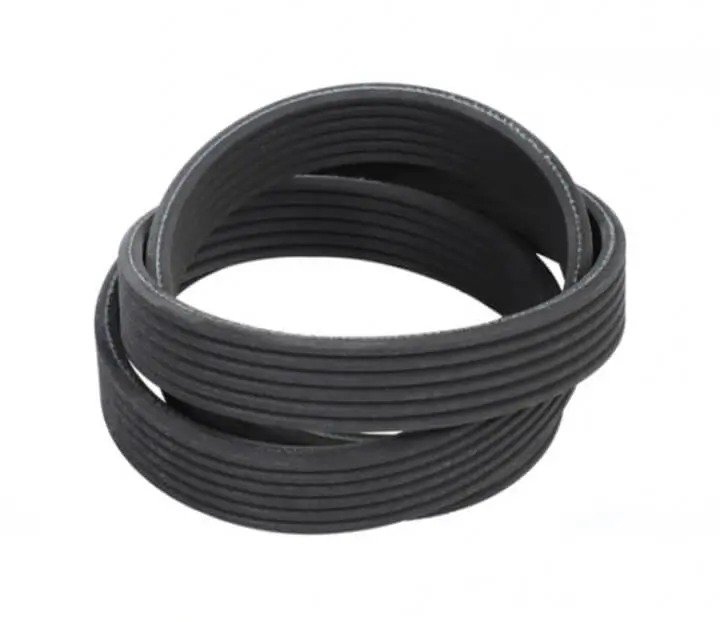
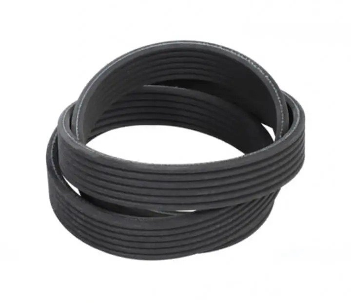

تسمههای تایمینگ با دندانههای دقیق و مهندسیشده، هماهنگی کامل بین شفتها را تضمین میکنند و عملکرد بینقص را حتی در حساسترین ماشینآلات صنعتی و خودروها ارائه میدهند. مقاومت بالا، طول عمر طولانی و عملکرد بدون لغزش، این تسمهها را به گزینهای ایدهآل برای صنایع پیشرفته تبدیل کرده است.
 
تسمههای شیاری V شکل با شیارهای دقیق، انتقال نیرو را با کمترین لغزش و بیشترین راندمان انجام میدهند و برای خودروها و ماشینآلات صنعتی مناسب هستند.


تسمههای گرد و چندضلعی جوشی از جنس PVC یا PU، مقاوم و با طول عمر بالا هستند. قابل استفاده نخدار یا بدون نخ و آپارات آسان با گیره و هویه.


تسمههای دور متغیر با سطح مقطع ذوزنقهای و چندلایه نخ مستحکم، برای عملکرد نرم و انتقال قدرت دقیق طراحی شدهاند.

تسمههای تخت انتقال نیرو با لایههای مقاوم لاستیکی و پلیآمید میانی، قدرت بالا و دوام طولانی ارائه میدهند.

تسمههای نقاله PVC و PU برای انتقال مواد غذایی، دارویی، معدنی، کشاورزی و بستهبندی طراحی شدهاند.

تسمههای V شکل یا کولری، پرکاربردترین نوع تسمه صنعتی هستند و برای انتقال قدرت در انواع موتور، کمپرسور و پمپ استفاده میشوند.